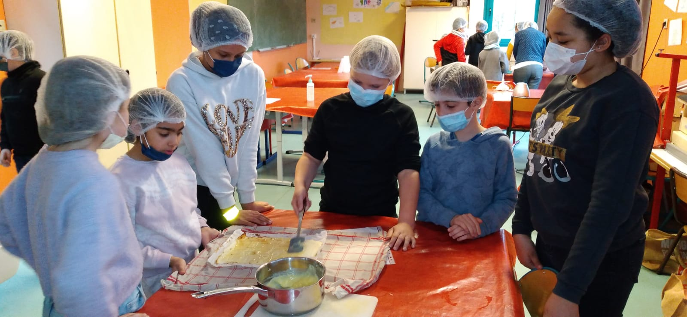

Fête d'école
Après trois ans d'absence la fête de l'école fait son grand retour ce samedi 21 mai 2022.
Nous comptons sur la colaboration de tous les parents,
grands-parents, oncles, tantes, amis pour que cette journée reste gravée à jamais dand le coeur des enfants!!
Concernant le programme ce sont les deux équipes pédagogiques qui le gèrent,
à savoir que les enfants de la maternelle La Fontaine commence leurs spectacles pour 10h30 et les enfants d'élémentaire de l'école A.Malraux à partir de 14h.
Le déroulement de la fête se présentera ainsi :
- à partir de 8h30, les parents souhaitant aider à l'installation des stands sont les bienvenus,
- à partir de 10h, ouverture des grilles et entrée sous présentatoin d'un bracelet,
- à 10h30 fermeture des grilles et et début du spectacle des maternelles
- à 11h30, à la fin du spectacle des maternelles, la Kermesse ouvrivra ses stands pour acueillir tous les enfants.
- à 14h00 commencera le spectacle des élémentaires
- à la fin du spectacle des élémentaires les parents disponible sont les bienvenus pour aider au rangement des stands.
Cuisiner avec les enfants
Cours de cuisine CM1 et ULIS
Le premier Avril a eu lieu un cours de cuisine avec la classe des CM1 de Mme Delaporte et la classe ULIS de Mme Pietrzack,
cet atelier a eu pour objectif de sensibiliser les enfants à la cuisine, à l'apprentissage des unités de mesures de toutes sortes,
et de travailler leur papilles gustative, mais également de partager un moment convivial entre camarade.
Merci aux parents qui ont participés à ce projet qui sans eux l'organisation n'aurais pas été la même.
Potager des ULIS
Bravo à Mme Pietrzack pour son projet scolaire, avec sa classe ULIS ils ont construits un potager ,
ceux-là ont plantés des oignons, des radis, des laitues et ont été sensibiliser au compost.